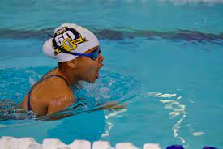
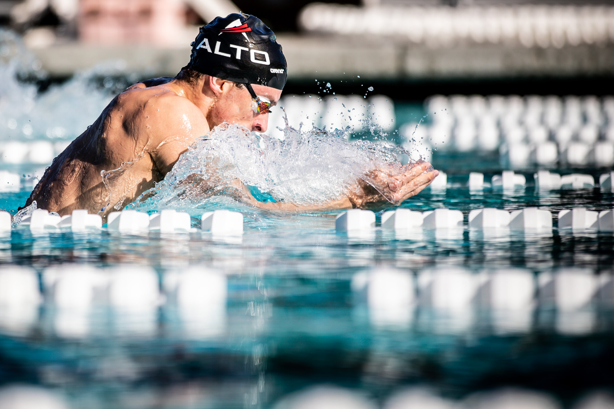
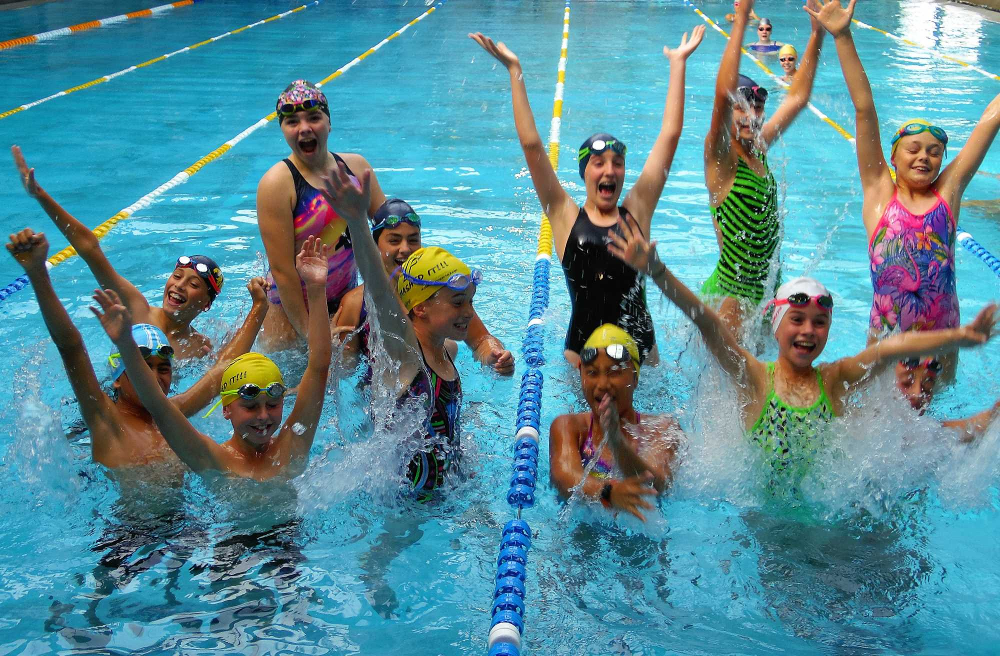
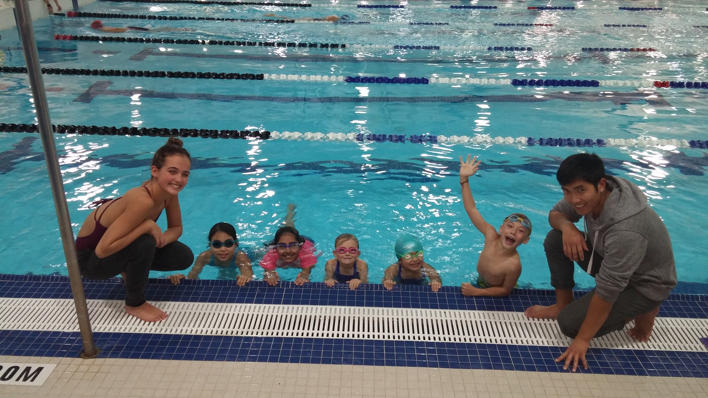
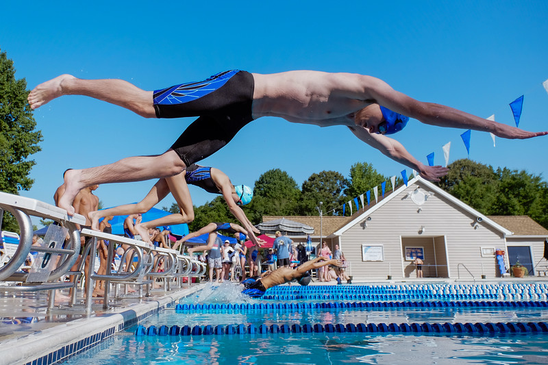

ABOUT Champions Club
Champions Swimming Club were founded in 2002.
It is open to all competitive swimmers, boys, girls, seniors and masters. We aim to get the best out of each and everyone of its swimmers
– whether it's a national medal or a personal best time at a local swimming gala.
The club offers top quality swim training sessions at decent times every day of the week for swimmers of all ages.
Our team delivers water safety, learn to swim programmes and squad programmes to more than 1000 students each week around our district.
Chairman: Alok Sethia
Head coach: Siddharth Jhunjhunwala




